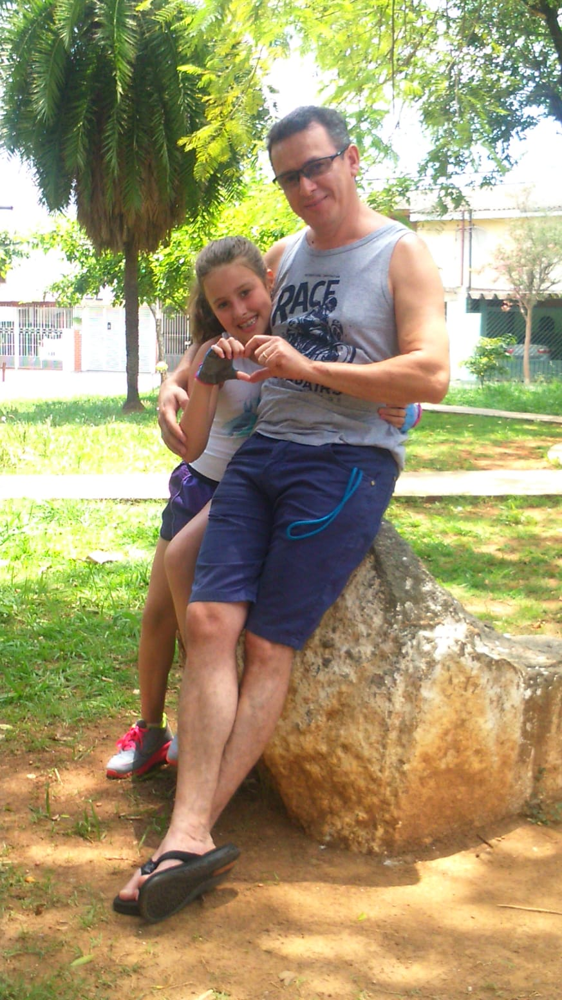
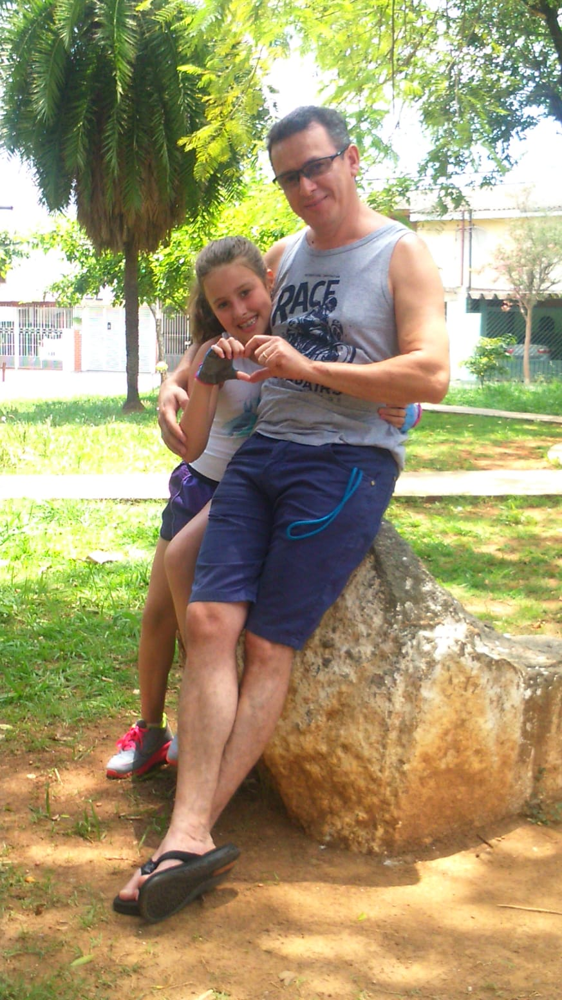

Familia

 


Parabéns pra minha filha do coração!🎉💙
Chegaram os 18! Agora você tá oficialmente na fase “adulto”, mas sem pressa, viu? Vai com calma aí!
Aproveita cada minuto, cada rolê, cada conquista e cada riso.
Tenho muito orgulho de ver a pessoa incrível que você tá se tornando e sei que esse é só o começo de uma jornada gigante.
Que essa nova fase venha cheia de liberdade, experiências inesquecíveis e muitos sonhos realizados.
Estaremos sempre aqui te admirando e torcendo por vc!
Feliz aniversário, minha menina! Bora comemorar porque 18 só acontece uma vez! 🥂✨
- Joyce
Nana...hoje é um dia muito especial! Dia de recordamos o seu nascimento! Foi um dia tão especial?! Do início ao fim do dia, repleto de amor!
A família toda ansiosa por sua chegada. Será que era menino ou menina?
O fusca foi cheio de gente! 😅
Eu, sua mãe, seu pai, sua vó...o carro do amor passando na sua porta. Destino...Nipo Brasileiro.
Assim que sua mãe entrou no centro cirúrgico eu me agarrei com São Miguel e fiquei lá grudada na porta, a espera de notícias!
Era tanto amor pra vc que até dividimos com outro bebê! Na verdade a gente comemorou achando que era você! Kkk
Ai depois vimos que não era você! Não demora muito e seu pai vem com o carrinho! Você enrolada em um pano azul (padrão do centro cirúrgico) e todos ali querendo saber se era menino ou menina.
Minha madrinha (Sandra) ligou nesse exato momento eu não sabia se atendia, se chorava, se tentava descobrir quem era você?! Fiz tudo ao mesmo tempo! Ficou meio confuso!
E aí eu descobri! Descobri que era a nossa tão sonhada Nathalia. Dali em diante foi muito amor, muitas descobertas, muitas fotos, muita emoção, muitas apresentações na escola.
São 18 anos de Nathalia Guedes! Esse menina mulher potente! Eu poderia passar horas aqui falando de tantas lembranças que temos nesses 18 anos, mas acho que já ocupei todos os caracteres permitidos nesta msg então vou parar por aqui.
Feliz aniversário meu amor, que a vida seja muito melhor do que você esteja sonhando. Obrigado por sua generosidade e amor.
Eu e Neto te amamos muito.
Curta muito seus 18 anos e quando quiser ouvir histórias malucas, só me ligar!
Te amo.
Feliz Aniversário
-Renata